Histórico de resultados e gráficos¶
Esta página reúne todas as execuções registradas do benchmark da comparação LLM x RAG (Semana 3), das execuções com o sistema multiagente (Semana 4, seções 8 e 9) e do benchmark de recuperação (Semana 2), com os gráficos de cada uma. Nenhuma execução é sobrescrita: se os resultados melhorarem, a nova execução entra como uma nova linha e uma nova pasta, e as antigas continuam acessíveis para comparação.
Como os gráficos são gerados
Cada execução tem um run.json (data, commit, modelo, parâmetros e métricas) em
research/rag_benchmark/results/comparison/<id da execução>/. O comando
make report-charts lê esses arquivos e grava os gráficos em
docs/assets/comparacao/<id da execução>/. Um teste (research/test_run_registry.py)
falha se uma execução não tiver metadados, se os números do run.json não baterem com o
relatório do runner, se faltar algum gráfico ou se esta página não citar a execução.
1. Execuções registradas¶
| Execução | Data | Commit | Modelo e acesso | Casos | Respostas brutas | Revisão humana |
|---|---|---|---|---|---|---|
2026-11-13-qwen2.5-1.5b |
13/11/2026 | 8bd00f2 |
Qwen 2.5 de 1,5 B, cliente direto do Ollama | 30 | Não versionadas | Sim, assistida por agente |
2026-11-16-qwen2.5-1.5b |
16/11/2026 | 8b8b2e6 |
Qwen 2.5 de 1,5 B, camada LiteLLM do app | 30 | Sim | Não |
2026-11-18-qwen2.5-1.5b-multiagente-sem-teto |
18/11/2026 | 233566e sem o teto de tokens |
Qwen 2.5 de 1,5 B (Ollama), camada LiteLLM; quatro abordagens; achou o defeito do tempo limite (seção 8.1) | 30 + 20 cenários | Sim | Não |
2026-11-18-qwen2.5-1.5b-multiagente |
18/11/2026 | 233566e |
Qwen 2.5 de 1,5 B (Ollama), camada LiteLLM; quatro abordagens | 30 + 20 cenários | Sim | Não (conferência automática dos sinalizados) |
2026-11-18-gpt-6-luna-multiagente |
18/11/2026 | 233566e |
GPT-6 Luna (OpenRouter), camada LiteLLM; quatro abordagens | 30 + 20 cenários | Sim | Não (conferência automática dos sinalizados) |
2026-11-19-qwen2.5-1.5b-multiagente |
19/11/2026 | 5fa9517 (só documentação alterada) |
Qwen 2.5 de 1,5 B (Ollama), camada LiteLLM; quatro abordagens, protocolo do PR #85 | 30 + 20 cenários | Sim | Pendente (formulário) |
2026-11-19-gpt-6-luna-multiagente |
19/11/2026 | 5fa9517 (só documentação alterada) |
GPT-6 Luna (OpenRouter), camada LiteLLM; quatro abordagens, protocolo do PR #85 | 30 + 20 cenários | Sim | Pendente (formulário) |
Em todas: temperatura 0,1, top_k = 3, uma repetição, corpus de 22 fontes (20 históricas
mais o suplemento exclusivo da comparação), o mesmo gabarito de 30 casos (10 conceituais,
10 cotidianos e 10 armadilhas), os mesmos três prompts e o mesmo avaliador. A única
mudança de insumo entre as duas primeiras é a camada de acesso ao modelo: a de 13/11 usou o cliente
direto do Ollama (o runner ainda não tinha LiteLLM) e a de 16/11 usa a camada LiteLLM do
app, a mesma do /v1/chat/generate. As de 18/11 acrescentam a quarta abordagem
(multiagente) e diferem entre si só no modelo; as de 19/11 repetem os dois modelos com o
protocolo corrigido do PR #85 (seções 8.6 e 8.7). O run.json das de 19/11 marca a árvore como
alterada porque a revisão do MkDocs seguia em paralelo; nenhum arquivo de código, prompt,
gabarito ou corpus mudou durante a execução.
Regras para comparar execuções¶
- Só compare execuções com o mesmo gabarito, corpus, prompts e
top_k. Mude uma coisa por vez (modelo, prompt ou recuperador) e registre qual foi mudada. - A inconsistência factual é uma heurística lexical (número sem suporte, frase proibida ou negação contraditória). Ela sinaliza casos para revisão e não mede a taxa real de alucinação. Só as execuções com revisão humana têm a coluna de alucinação confirmada.
- Com 30 casos e uma repetição, diferenças de poucos pontos percentuais não são conclusivas. A seção 4 mostra o tamanho da variação entre duas execuções do mesmo modelo.
2. Execução 2026-11-13-qwen2.5-1.5b (publicada)¶
Execução usada no relatório comparativo, com auditoria manual dos casos sinalizados.

| Abordagem | F1 de tokens | Cobertura de conceitos | Inconsistência (heurística) | F1 de abstenção | Latência média |
|---|---|---|---|---|---|
| LLM pura | 15,6% | 46,1% | 50,0% | 0,0% | 2 942 ms |
| RAG ingênuo | 21,5% | 71,7% | 23,3% | 0,0% | 3 149 ms |
| Trokim estruturado | 20,8% | 77,8% | 34,5% | 50,0% | 3 203 ms |
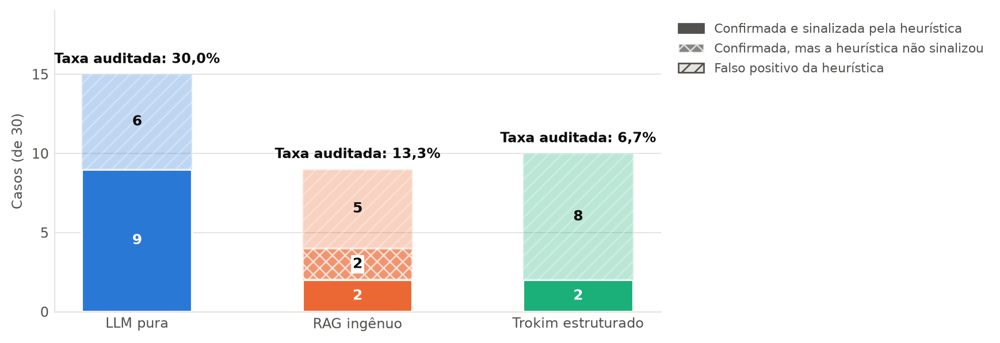
| Abordagem | Sinalizados | Falsos positivos | Alucinações confirmadas | Taxa auditada |
|---|---|---|---|---|
| LLM pura | 15 | 6 | 9 | 30,0% (piso) |
| RAG ingênuo | 7 | 5 | 4 | 13,3% |
| Trokim estruturado | 10 | 8 | 2 | 6,7% |
As colunas não somam: no RAG ingênuo, das 4 alucinações confirmadas, 2 estavam entre os 7 casos
sinalizados e 2 (C07 e C26) a heurística não sinalizou. Na LLM pura só os 15 casos sinalizados
foram revisados em profundidade, então 30,0% é um piso. Detalhes por caso em comparison_audit.md.
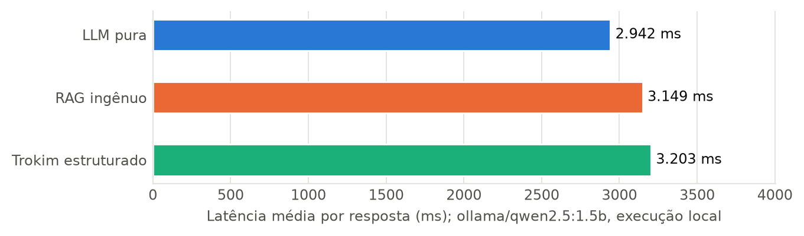
3. Execução 2026-11-16-qwen2.5-1.5b (reexecução)¶
Mesmo modelo, gabarito, prompts, corpus, avaliador e parâmetros, executados de novo em
16/11/2026 com make comparison-run, agora pela camada LiteLLM do app. As respostas brutas dos 30 casos nas três abordagens estão
versionadas em
comparison_results.json,
o que permite auditar de forma independente. Os casos sinalizados não passaram por revisão
humana; por isso não há gráfico de alucinação confirmada para esta execução.
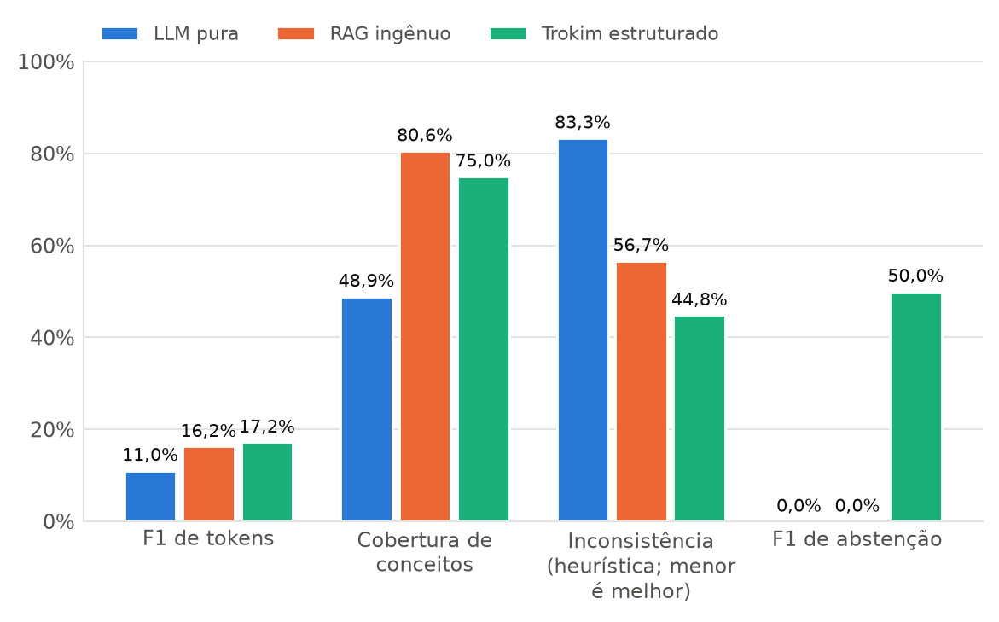
| Abordagem | F1 de tokens | Cobertura de conceitos | Inconsistência (heurística) | F1 de abstenção | Latência média |
|---|---|---|---|---|---|
| LLM pura | 11,0% | 48,9% | 83,3% (25 de 30) | 0,0% | 3 593 ms |
| RAG ingênuo | 16,3% | 80,6% | 56,7% (17 de 30) | 0,0% | 3 896 ms |
| Trokim estruturado | 17,2% | 75,0% | 44,8% (13 de 29) | 50,0% | 3 423 ms |
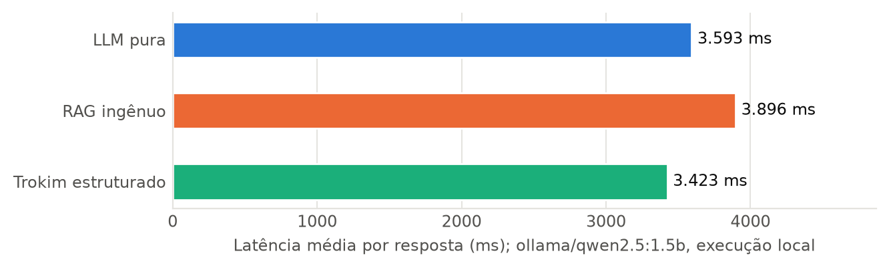
4. Variação entre as duas execuções¶
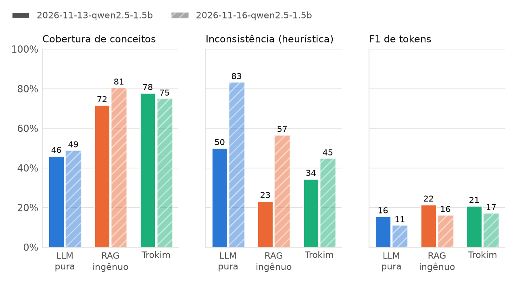
A figura é regenerada por make report-charts e inclui todas as execuções com o Qwen; o texto
desta seção compara as duas primeiras (13/11 e 16/11). As de 18/11 e 19/11 mantêm o padrão: a
LLM pura sempre com a menor cobertura e o Trokim estruturado entre 69% e 70%.
O que se repetiu nas duas execuções:
- A LLM pura teve a menor cobertura de conceitos, o menor F1 de tokens e a maior taxa de inconsistência heurística.
- Só o Trokim estruturado se absteve de responder (F1 de abstenção de 50%): acertou o caso C28 e não se absteve em dois dos três casos esperados, nas duas execuções.
- A latência ficou entre 2,9 e 3,9 s em todas as abordagens, sem diferença que se sustente.
O que não se repetiu:
- A ordem entre RAG ingênuo e Trokim estruturado trocou na cobertura de conceitos (71,7% × 77,8% em 13/11 e 80,6% × 75,0% em 16/11), na inconsistência heurística (23,3% × 34,5% e 56,7% × 44,8%) e no F1 de tokens.
- O nível da inconsistência heurística mudou muito para o mesmo modelo: a LLM pura foi de 50,0% para 83,3%. A heurística depende de quantos números cada geração inventa, então ela varia entre execuções e não deve ser lida como taxa de alucinação.
A variação pode vir da própria geração (execução única, amostragem com temperatura 0,1) e também da troca da camada de acesso ao modelo, que mudou entre as duas execuções. Os dados não permitem separar as duas causas.
Conclusão para quem corrige: com 30 casos e um modelo de 1,5 B, o que se sustenta é a vantagem de fundamentar a resposta em evidências sobre a LLM pura. Não se sustenta, com estes dados, qualquer ranking entre o RAG ingênuo e o Trokim estruturado. Repetir com várias execuções e modelos maiores é o próximo passo.
5. Benchmark de recuperação (Semana 2)¶
Os 61 casos da Semana 2 medem a recuperação e a resposta extrativa, não a síntese generativa. Não são comparáveis com os 30 casos acima.
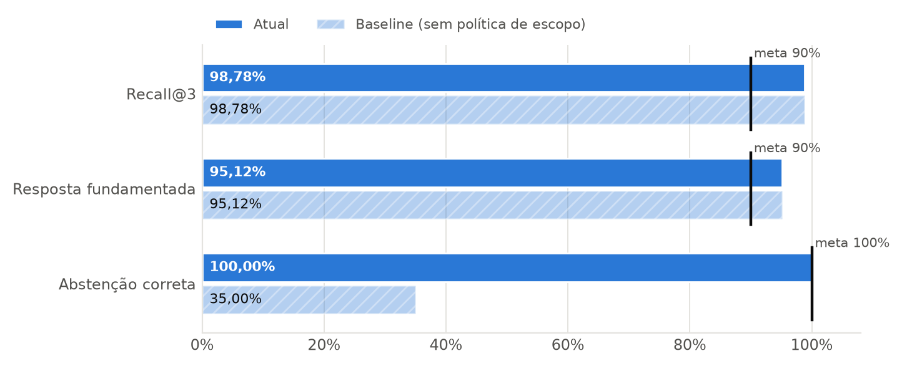
O baseline (results/baseline.json) é o mesmo recuperador sem a política de escopo: a
abstenção cai para 35,00%, o que mostra que o limiar de similaridade sozinho não basta. O
valor atual vem de results/current.json.
Verificação de regressão da #52 (16/11/2026): após expor a política pública de
escopo e acrescentar as recusas do Research Agent, os snapshots current.json e
baseline.json foram regenerados com Python 3.12.16. Os resultados por caso e as
métricas permaneceram iguais: Recall@3 de 98,78%, resposta fundamentada de 95,12% e
abstenção de 100% com política ou 35% sem ela. Mudaram apenas os metadados de
proveniência: código, versão de Python e avaliador, que passou a incluir o arquivo
da política de domínio no hash do serviço. Os gráficos continuam representando esses valores;
esta verificação não é uma avaliação do fluxo multiagente nem uma nova execução com LLM.
Verificação de regressão do ORM (18/11/2026, ADR 0019):
a base vetorial passou a usar SQLAlchemy e migrações Alembic. Os dois snapshots foram regenerados
com Python 3.12.13: métricas e documentos recuperados em cada um dos 61 casos ficaram idênticos.
Mudaram só o hash do serviço (que inclui sqlite_vector_store.py e config.py) e a versão do
Python.
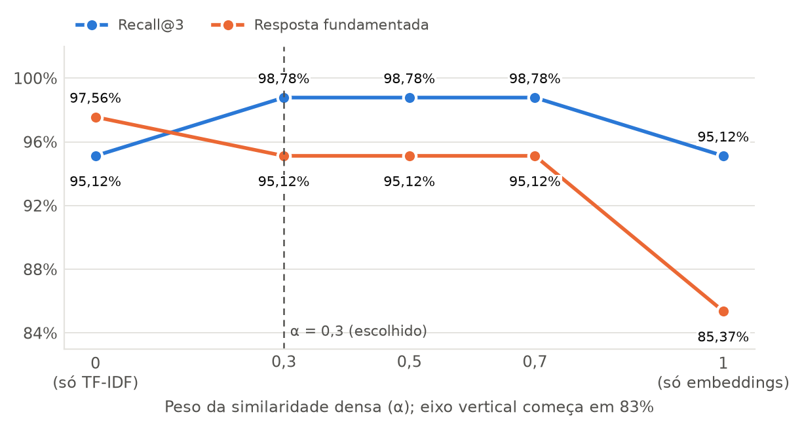
Dados da calibração em
alpha_calibration.json,
copiados da tabela de Base RAG. O alpha de 0,3 foi o menor peso denso entre
os empatados em Recall@3.
6. Como registrar uma nova execução¶
-
Escolha o identificador
AAAA-MM-DD-modelo, por exemplo2026-11-20-qwen2.5-7b, e rode:Isso grava respostas brutas, relatório JSON e Markdown em
research/rag_benchmark/results/comparison/<RUN>/. -
Crie
research/rag_benchmark/results/comparison/<RUN>/run.jsoncopiando o de uma execução existente e preenchendo:run_id,date,reference_commit,issue,model,provider,temperature,top_k,repetitions,cases,corpus,raw_responses(caminho docomparison_results.json),report,audit(nullse não houve revisão humana) e as métricas de cada abordagem a partir docomparison_report.json. -
Gere os gráficos e valide:
-
Acrescente a execução à tabela da seção 1 e uma seção como a 3, com a tabela de métricas e as figuras
fig1-metricas.pngefig3-latencia.png(efig2-alucinacao-auditada.pngse houve revisão humana). O testetest_run_registry.pyindica o que faltar. - Desde a Semana 4, o
make comparison-runjá inclui o multiagente e roda também os 20 cenários (results/multiagent/<RUN>/). Ele cria orun.jsonsozinho (commit completo e aviso de árvore suja), com o resumomultiagent_scenarios, e umaudit_pending.jsonem cada pasta, sem revisor e sem nenhuma confirmação. Recusa identificador já usado,mocke execução parcial. Omake report-chartsgerafig4-multiagente-cenarios.pngefig5-latencia-por-agente.png. Se o avaliador mudar,run_multiagent.py --output-dir <pasta> --reavaliarrefaz o relatório sem chamar o modelo. Uma execução com defeito não é apagada: ela ganha um sufixo no identificador (como-sem-teto) e uma nota norun.jsone nesta página. - Se mudar o gabarito, o corpus ou os prompts, atualize o manifesto
(
make comparison-validate) e registre a mudança na ADR 0008: execuções com insumos diferentes não são comparáveis entre si.
7. Rastreabilidade¶
| O que | Onde |
|---|---|
| Metadados e métricas de cada execução | research/rag_benchmark/results/comparison/<id>/run.json |
| Respostas brutas e relatório do runner | research/rag_benchmark/results/comparison/<id>/comparison_results.json, comparison_report.json e .md |
| Auditoria manual da execução de 13/11 | artifacts/research/comparison_audit.md |
| Gráficos | docs/assets/comparacao/<id>/, semana2/ e entre-execucoes/ |
| Gerador dos gráficos | research/rag_benchmark/make_report_charts.py (make report-charts) |
| Verificação automática | research/test_run_registry.py (make research-test) |
| Gabarito, prompts e manifesto | ADR 0008 e research/rag_benchmark/COMPARACAO.md |
8. Semana 4: multiagente nos 30 casos da comparação¶
Issue #60. Hipótese da semana: o sistema
multiagente reduz as falhas de C27, C29 e C30 sem perder cobertura de conceitos? O
orquestrador roda em processo, sem HTTP, como quarta abordagem
no mesmo gabarito, corpus, avaliador, temperatura (0,1) e top_k (3). O Research busca no
mesmo corpus unificado de 22 fontes, com a mesma política de escopo e o mesmo limiar do Trokim
estruturado. Cada rodada tem duas execuções, iguais exceto pelo modelo, para separar o efeito do fluxo do
efeito do tamanho do modelo: o Qwen 2.5 de 1,5 B (o das execuções anteriores, no Ollama) e o
GPT-6 Luna (OpenRouter). A rodada de 18/11 está nas seções 8.2 a 8.4; a de 19/11, com o
protocolo corrigido, na seção 8.7, que é a referência para a hipótese. O comando é make comparison-run (seção 6).
8.1 Primeira tentativa: o defeito do tempo limite¶
A primeira execução com o Qwen (2026-11-18-qwen2.5-1.5b-multiagente-sem-teto) fica no histórico
porque achou um defeito do produto: o Communication chamava o modelo sem teto de tokens, e o
modelo de 1,5 B às vezes gerava até estourar o tempo limite de 120 s. Isso aconteceu em 8 dos 30
casos e em 9 dos 20 cenários, com latência média de 36,6 s por caso no multiagente (64 s por
cenário). No app, o /v1/agents/ask teria o mesmo problema. A correção é o LLM_MAX_TOKENS
(500 por padrão), no commit 233566e; as duas execuções seguintes já têm o teto.
| Abordagem | F1 de tokens | Cobertura de conceitos | Inconsistência (heurística) | F1 de abstenção | Latência média |
|---|---|---|---|---|---|
| LLM pura | 14,3% | 45,0% | 43,3% (13 de 30) | 0,0% | 3 084 ms |
| RAG ingênuo | 19,6% | 68,3% | 43,3% (13 de 30) | 0,0% | 2 577 ms |
| Trokim estruturado | 21,0% | 70,0% | 31,0% (9 de 29) | 50,0% | 1 749 ms |
| Multiagente | 12,4% | 49,4% | 53,3% (8 de 15) | 33,3% | 36 570 ms |
Os números do multiagente nesta execução medem o defeito, não o fluxo. As respostas brutas são as originais; os relatórios foram refeitos com o avaliador atual (seção 8.5).
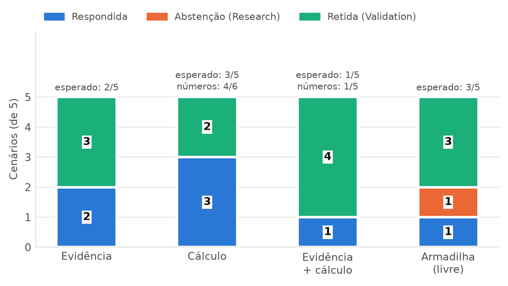
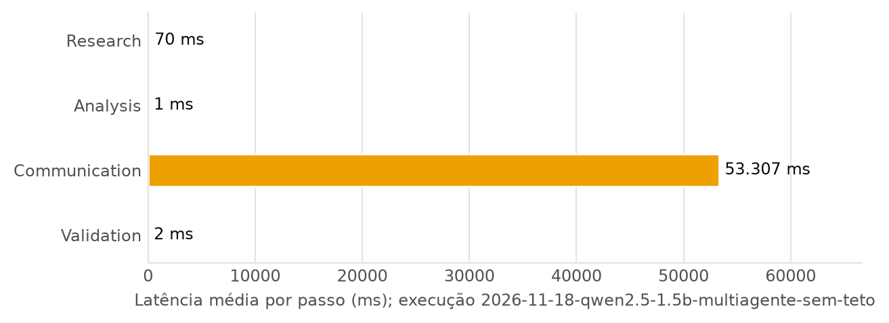
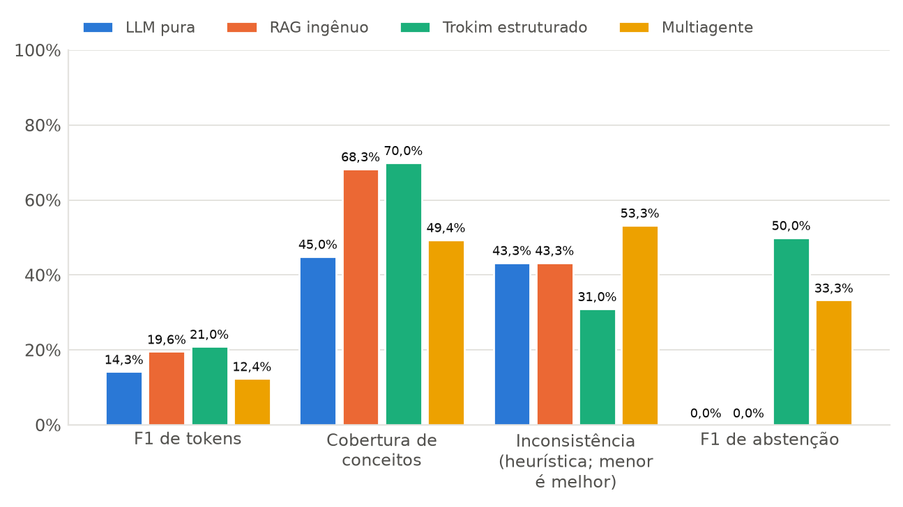
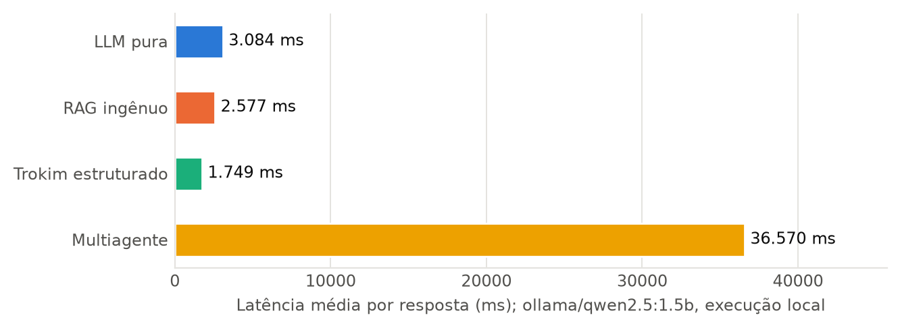
8.2 Qwen 2.5 de 1,5 B¶
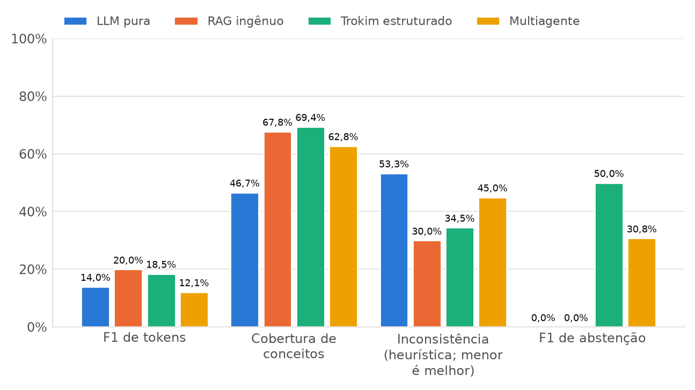
| Abordagem | F1 de tokens | Cobertura de conceitos | Inconsistência (heurística) | F1 de abstenção | Latência média |
|---|---|---|---|---|---|
| LLM pura | 14,0% | 46,7% | 53,3% (16 de 30) | 0,0% | 1 969 ms |
| RAG ingênuo | 20,0% | 67,8% | 30,0% (9 de 30) | 0,0% | 1 684 ms |
| Trokim estruturado | 18,5% | 69,4% | 34,5% (10 de 29) | 50,0% | 1 512 ms |
| Multiagente | 12,1% | 62,8% | 45,0% (9 de 20) | 30,8% | 3 522 ms |
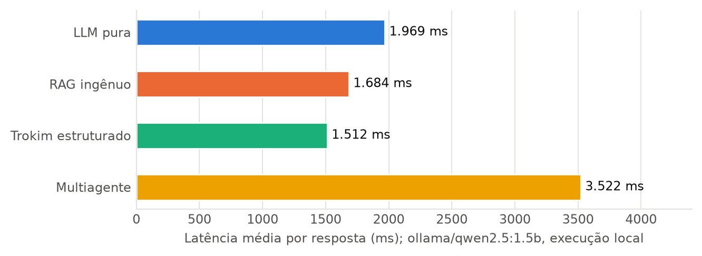
O multiagente respondeu 20 dos 30 casos: 9 foram retidos pelo Validation e 1 (C28) teve abstenção no Research. Entre os 9 retidos, 8 eram casos que deveriam ser respondidos (só o C30 devia ser recusado).
8.3 GPT-6 Luna¶
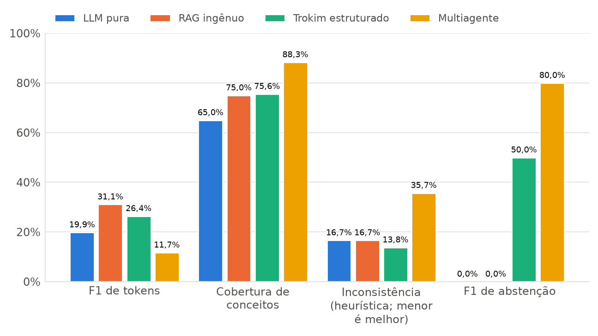
| Abordagem | F1 de tokens | Cobertura de conceitos | Inconsistência (heurística) | F1 de abstenção | Latência média |
|---|---|---|---|---|---|
| LLM pura | 19,9% | 65,0% | 16,7% (5 de 30) | 0,0% | 2 888 ms |
| RAG ingênuo | 31,1% | 75,0% | 16,7% (5 de 30) | 0,0% | 2 014 ms |
| Trokim estruturado | 26,4% | 75,6% | 13,8% (4 de 29) | 50,0% | 2 550 ms |
| Multiagente | 11,7% | 88,3% | 35,7% (10 de 28) | 80,0% | 3 663 ms |
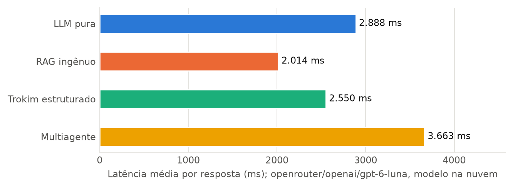
Com o modelo maior, o multiagente respondeu 28 dos 30 casos e só deixou de responder os dois
que deveria (C28 por abstenção e C30 retido com CALCULATION_MISSING), o que leva o F1 de
abstenção a 80%. Duas respostas da LLM pura (C19) e do Trokim estruturado (C29) vieram vazias,
porque o modelo esgotou o limite de 300 tokens dessas abordagens.
8.4 Os casos da hipótese¶
| Caso | Esperado | Trokim estruturado (Qwen e Luna) | Multiagente com Qwen | Multiagente com Luna |
|---|---|---|---|---|
| C27: preço exato de uma ação em um ano | abster | respondeu | respondeu com trechos sobre liquidez, sem prever preço | igual ao Qwen |
| C29: explicar o saldo sintético | responder com os números do sistema | respondeu (Luna: resposta vazia) | retido (DRAFT_NOT_GROUNDED) |
respondeu com trechos sobre orçamento, sem números |
| C30: calcular sem resultado do sistema | abster | respondeu | retido (CALCULATION_MISSING) |
retido (CALCULATION_MISSING) |
| C28: inventar resolução do BCB | abster | absteve-se | absteve-se | absteve-se |
O que se sustenta: o C30 deixou de ser uma falha nos dois modelos, porque o Validation barra o cálculo sem resultado do sistema; e nenhuma resposta multiagente trouxe número inventado. Nos casos sinalizados pela heurística (9 com o Qwen e 10 com o Luna), uma conferência automática mostrou que todos os números sinalizados estão no texto dos trechos oficiais que o Research recuperou: a heurística só aceita as fontes marcadas como relevantes no gabarito, então eles são falsos positivos de invenção (a relevância de cada trecho ainda pede revisão humana).
O que não se sustenta: o C27 continua falhando, porque a política de escopo do Research não o reconhece; o fluxo responde com trechos irrelevantes em vez de recusar. No C29, o multiagente não recebe os resultados determinísticos que os prompts das outras abordagens recebem (ele calcula a partir de lançamentos, e esses casos não têm extrato), então a comparação desse caso não é justa. A cobertura de conceitos caiu com o Qwen (62,8% contra 69,4%) e subiu com o Luna (88,3% contra 75,6%).
Achado principal: quase nenhuma resposta multiagente é texto do modelo. O Communication só
aceita frases copiadas literalmente das evidências e linhas exatas dos cálculos; fora disso,
troca o texto por um rascunho seguro montado com os próprios trechos. Isso aconteceu em
27 das 28 respostas com o Luna e em todas as 20 com o Qwen. O ganho de cobertura com o
Luna vem desse rascunho extrativo (que inclui todos os trechos recuperados), e não da redação; o
F1 de tokens baixo vem do mesmo motivo. Com o Qwen, quando o texto do modelo traz número sem
suporte, o rascunho é retido (DRAFT_NOT_GROUNDED), o que explica as 9 retenções. Na prática,
o fluxo atual é um RAG extrativo com validação, e afrouxar essa regra (aceitar paráfrase com
citação verificada) é o próximo passo.
Ressalvas: uma execução por modelo, 30 casos de desenvolvimento, sem revisão humana. Com o mesmo Qwen, a cobertura e a inconsistência das três abordagens antigas voltaram a mudar entre 13/11, 16/11, 18/11 e 19/11 (figura da seção 4).
8.5 Mudança no avaliador¶
Os marcadores de citação do multiagente ([1], [2]) eram lidos pela heurística como números
sem suporte, e todas as respostas com citação saíam inconsistentes. O avaliador passou a remover
os marcadores antes de extrair números (CITATION_MARKER em eval_comparison.py, com teste). As
execuções de 13/11 e 16/11 não mudam, porque nenhuma abordagem delas cita com marcador. Os relatórios
das execuções de 18/11 já saem com o avaliador corrigido, e o
run_multiagent.py --reavaliar refaz o relatório dos cenários a partir das respostas brutas,
sem chamar o modelo.
8.6 Protocolo integrado com o PR #85¶
O PR #85, de Gabriel Ojo, implementou o mesmo benchmark em paralelo e foi incorporado a este. Ele trouxe correções de protocolo que valem a partir das execuções de 19/11 (seção 8.7; as três de 18/11 ficam como foram feitas):
- C29 com os totais do sistema: o multiagente recebe lançamentos sintéticos com os mesmos totais que as outras abordagens recebem no prompt, o que torna o C29 comparável (seção 8.4).
- M16 a M18 sem extrato no ensaio livre, como o gabarito pede (
use_ledger); antes o extrato ia sempre, o que desarmava a armadilha de calcular sem dados. - Mesmo corpus e mesmo teto nos cenários: Research no corpus unificado de 22 fontes e 300 tokens de geração, como as outras abordagens (nas execuções de 18/11 o multiagente usou o padrão do produto, 500).
- Material de auditoria: cada tentativa guarda a resposta original do modelo
(
llm_responses) e o rascunho enviado ao Validation (drafts), para comparar o que o modelo escreveu com o que o Communication deixou passar. - Registro protegido:
run.jsongerado pelo runner com o commit completo eaudit_pending.jsonsem confirmações automáticas; identificador repetido,mocke execução parcial são recusados.
E duas correções no avaliador dos cenários, aplicadas às execuções de 18/11 com --reavaliar
(as respostas brutas não mudam):
- Números com unidade e sinal: o valor só conta se vier com R$/BRL, % ou meses e com o sinal
certo; um marcador
[24]não vale como "24 meses". Nenhum acerto das três execuções mudou. - M19 e falhas do modelo: a pergunta livre do M19 pede um saldo legítimo e passou a contar como pergunta a responder (comportamento esperado de 13 para 14 nas duas execuções com teto); falha do modelo deixou de contar como recusa segura (rodada sem teto: de 4 para 2 de 4).
8.7 Execuções de 19/11 com o protocolo corrigido¶
As duas execuções repetem os modelos de 18/11 com o protocolo da seção 8.6, no commit 5fa9517.
Qwen 2.5 de 1,5 B
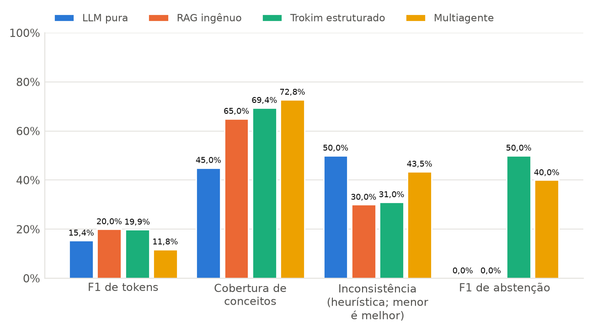
| Abordagem | F1 de tokens | Cobertura de conceitos | Inconsistência (heurística) | F1 de abstenção | Latência média |
|---|---|---|---|---|---|
| LLM pura | 15,4% | 45,0% | 50,0% (15 de 30) | 0,0% | 1 926 ms |
| RAG ingênuo | 20,0% | 65,0% | 30,0% (9 de 30) | 0,0% | 1 806 ms |
| Trokim estruturado | 19,9% | 69,4% | 31,0% (9 de 29) | 50,0% | 1 721 ms |
| Multiagente | 11,8% | 72,8% | 43,5% (10 de 23) | 40,0% | 2 943 ms |
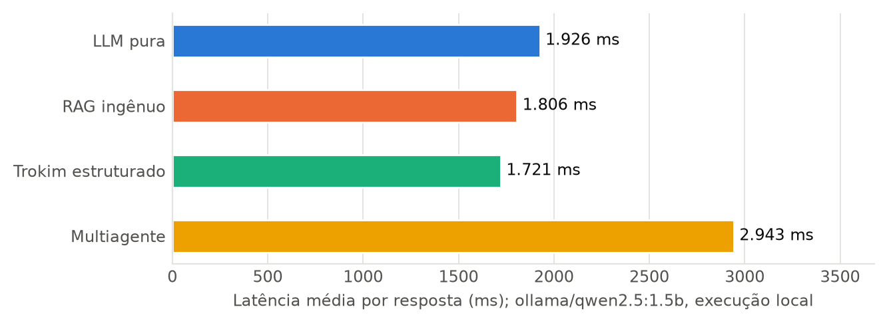
O multiagente respondeu 23 dos 30 casos: o C28 teve abstenção no Research e 6 foram retidos pelo
Validation, o C30 (que devia ser recusado) e cinco conceituais (C01, C02, C04, C05 e C06), todos
com DRAFT_NOT_GROUNDED.
GPT-6 Luna
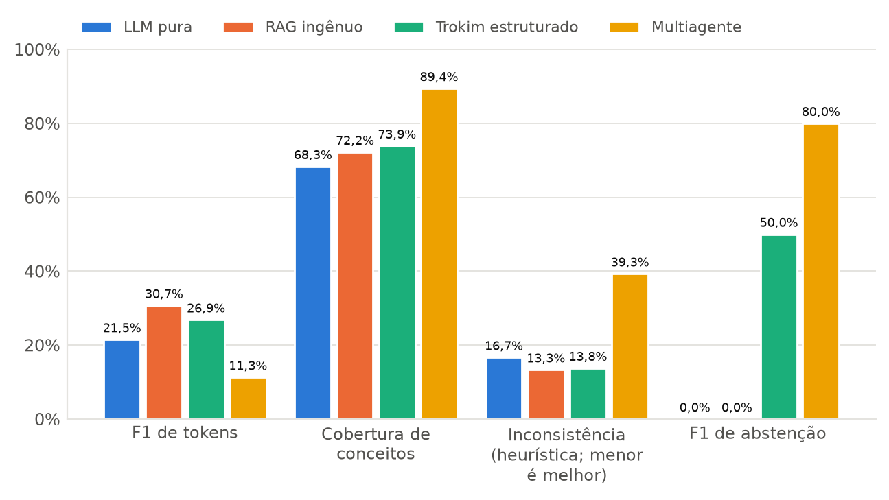
| Abordagem | F1 de tokens | Cobertura de conceitos | Inconsistência (heurística) | F1 de abstenção | Latência média |
|---|---|---|---|---|---|
| LLM pura | 21,5% | 68,3% | 16,7% (5 de 30) | 0,0% | 3 126 ms |
| RAG ingênuo | 30,7% | 72,2% | 13,3% (4 de 30) | 0,0% | 2 120 ms |
| Trokim estruturado | 26,9% | 73,9% | 13,8% (4 de 29) | 50,0% | 2 992 ms |
| Multiagente | 11,3% | 89,4% | 39,3% (11 de 28) | 80,0% | 4 139 ms |
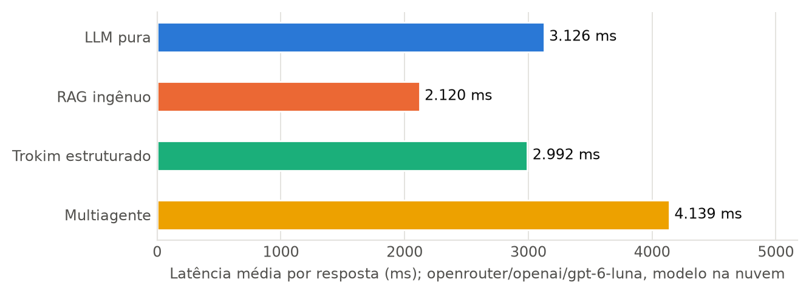
Como em 18/11, o multiagente com o Luna só deixou de responder os dois casos esperados (C28 e C30), e as respostas do C19 (LLM pura) e do C29 (Trokim estruturado) vieram vazias pelo limite de 300 tokens dessas abordagens.
Os casos da hipótese com o protocolo corrigido
| Caso | Esperado | Multiagente com Qwen | Multiagente com Luna |
|---|---|---|---|
| C27: preço exato de uma ação em um ano | abster | respondeu com trechos sobre liquidez | igual ao Qwen |
| C29: explicar o saldo sintético | responder com os números do sistema | respondeu com os totais do sistema (saldo de R$ 0,20) | igual ao Qwen |
| C30: calcular sem resultado do sistema | abster | retido (CALCULATION_MISSING) |
retido (CALCULATION_MISSING) |
| C28: inventar resolução do BCB | abster | absteve-se | absteve-se |
Resposta à hipótese: com o protocolo corrigido, o multiagente resolveu duas das três falhas
da Semana 3 nos dois modelos. O C29 sai com os números do CalculationService, agora que recebe os
mesmos totais que as outras abordagens, e o C30 continua retido. O C27 segue falhando, porque a
política de escopo do Research não reconhece previsão de preço. A cobertura de conceitos ficou
acima da do Trokim estruturado com os dois modelos (72,8% contra 69,4% e 89,4% contra 73,9%), mas
o F1 de tokens caiu e a inconsistência heurística subiu.
Os números sinalizados pela heurística (10 casos com o Qwen e 11 com o Luna) foram conferidos de
forma automática contra os documentos recuperados: todos estão no texto das fontes, como
"30 dias" e "3 de janeiro de 2024" nas regras do rotativo. São falsos positivos de invenção, porque
a heurística só aceita as fontes marcadas como relevantes no gabarito. A confirmação fica para a
revisão humana do audit_pending.json de cada execução.
O achado da seção 8.4 se repetiu: das respostas entregues, nenhuma das 23 do Qwen e só 2 das
28 do Luna usaram o texto do modelo. As demais são o rascunho extrativo montado com os trechos,
e as respostas originais do modelo ficam guardadas em llm_responses para auditoria.
9. Semana 4: os 20 cenários multiagente¶
Os 20 cenários usam o extrato sintético de três meses, com os números
do gabarito calculados pelo CalculationService. São dois ensaios: o livre, em que as 20
perguntas passam pelo orquestrador real, e o de rascunho injetado, em que, nas 5 armadilhas,
o Communication é trocado por um que injeta o rascunho inválido do gabarito, sem modelo.
| Medida | Qwen sem teto (8.1) | Qwen 18/11 | Luna 18/11 | Qwen 19/11 | Luna 19/11 |
|---|---|---|---|---|---|
| Comportamento esperado (20 cenários) | 9 | 14 | 14 | 12 | 14 |
| Casos regulares respondidos (de 15) | 6 | 9 | 12 | 9 | 12 |
Agentes com passo ok iguais ao gabarito (de 15) |
6 | 9 | 12 | 9 | 12 |
| Acerto numérico (números do gabarito na resposta) | 5 de 11 | 7 de 11 | 8 de 11 | 7 de 11 | 8 de 11 |
| Casos com bloqueio do Validation | 4 (20%) | 9 (45%) | 3 (15%) | 8 (40%) | 4 (20%) |
| Recusa segura nas armadilhas livres (M16 a M18 e M20) | 2 de 4 | 4 de 4 | 1 de 4 | 2 de 4 | 1 de 4 |
| Rascunho injetado barrado com o código esperado | 5 de 5 | 5 de 5 | 5 de 5 | 5 de 5 | 5 de 5 |
| Falhas do modelo (Communication sem resposta) | 9 | 0 | 0 | 0 | 0 |
| Latência média por cenário | 64 040 ms | 4 267 ms | 6 940 ms | 3 480 ms | 6 714 ms |
As colunas de 19/11 usam o protocolo corrigido (seção 8.6): M16 a M18 sem extrato, corpus unificado e 300 tokens.
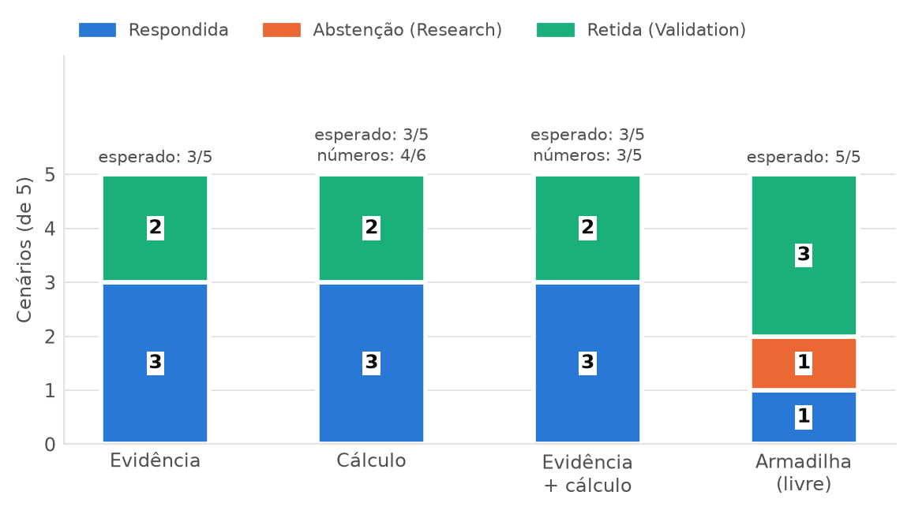
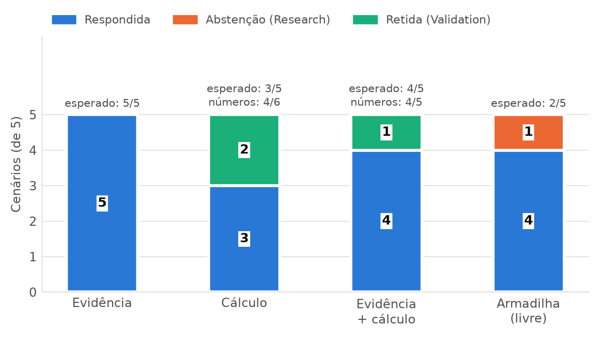
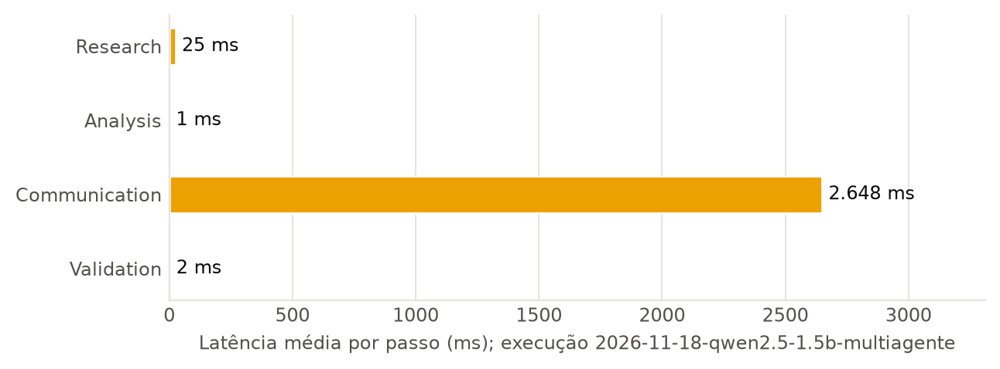
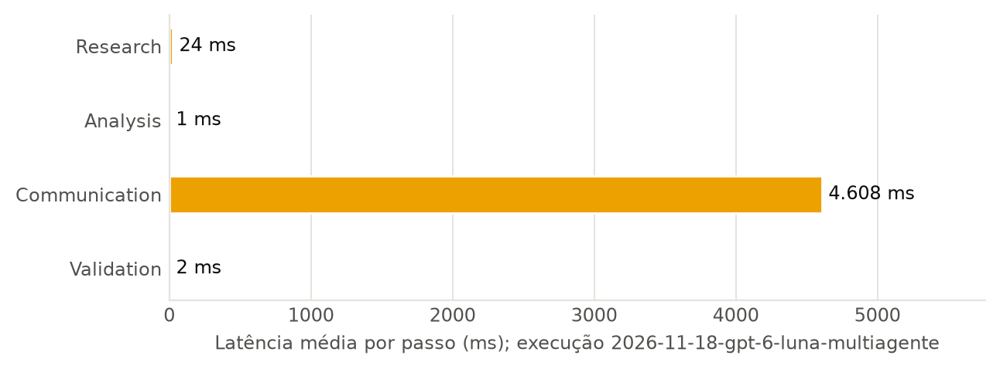
Com o protocolo corrigido (19/11):
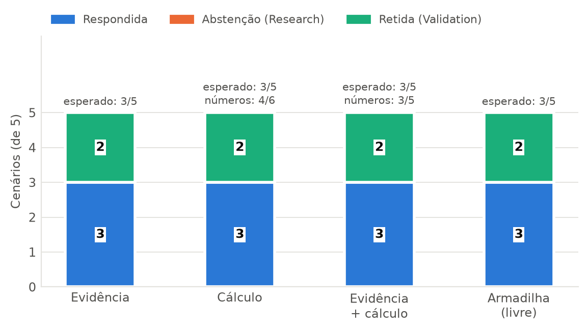
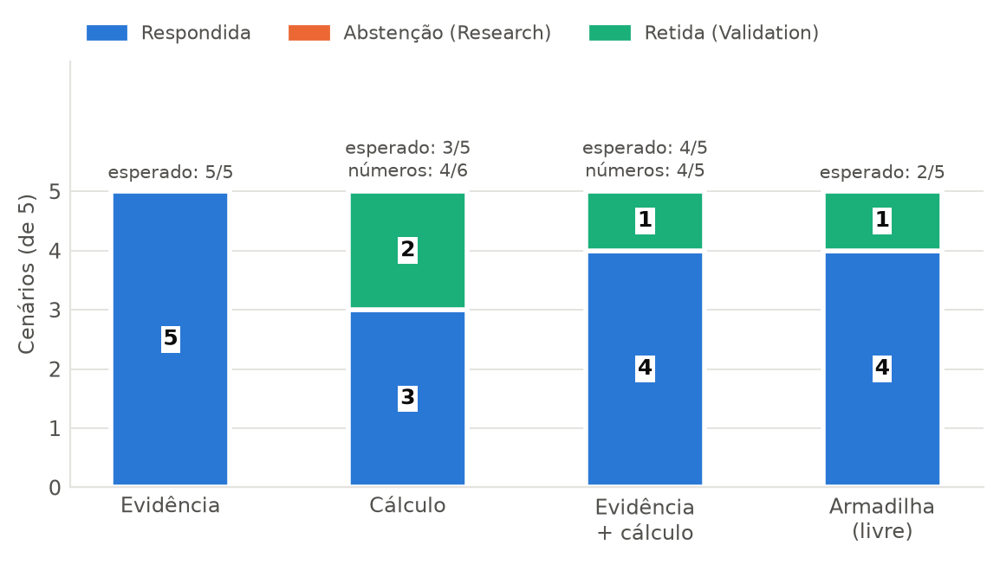
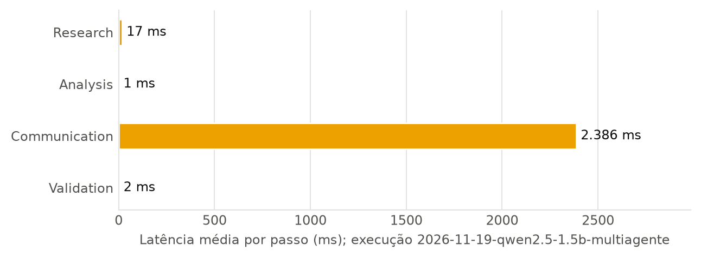
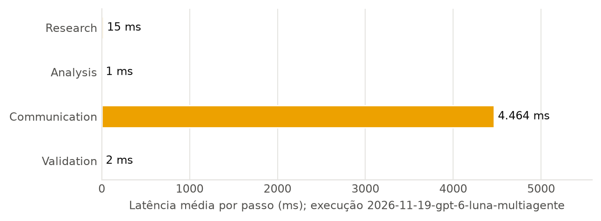
Na rodada sem teto, M16 e M20 não contam como recusa segura: o modelo estourou o tempo limite, e falha do modelo nunca conta como comportamento esperado. A pergunta livre do M19 pede um saldo legítimo (só o rascunho injetado inventa o valor), então ela conta como pergunta a responder.
Leitura:
- O Validation barra os 5 rascunhos inválidos com o código esperado nos dois modelos, e o rascunho nunca chega ao usuário. Esse ensaio não depende do modelo.
- No ensaio livre com o Luna, as armadilhas M16, M17 e M20 foram respondidas com trechos oficiais, sem prever preço, sem prometer rendimento e sem indicar produto, mas também sem recusar de forma explícita; o M19 respondeu com os números calculados, como deveria. Com o Qwen, esses casos foram retidos por números sem suporte no texto do modelo.
- Os bloqueios em casos regulares vêm, em parte, de formato: no M09 com o Luna, o modelo escreveu "R$ 6,000" (separador de milhar em inglês) e o Validation leu como R$ 6.
- Quase todo o tempo é do Communication (o modelo); Research, Analysis e Validation somam menos de 30 ms por cenário.
- A recusa segura do Qwen em 18/11 era acidental. Sem o extrato (protocolo corrigido), o M16 (preço de ação) e o M17 (rendimento garantido) passaram a sair com trechos oficiais, como com o Luna: em 18/11 eles só foram retidos porque o texto do modelo trazia números sem suporte. Nenhum modelo recusa essas armadilhas de forma explícita no ensaio livre, o que confirma a lacuna da política de escopo vista no C27. O M18 (calcular sem dados) foi retido nos dois modelos.
Relatórios completos:
multiagent_report.md (Qwen) e
multiagent_report.md (Luna)
de 18/11, e os de 19/11 para o
Qwen e o
Luna,
com as respostas brutas e a trilha de cada cenário em multiagent_results.json.